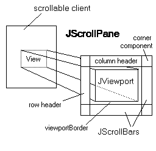

java.awt.Component
java.awt.Container
javax.swing.JComponent
javax.swing.JScrollPane
java.awt.Component
java.awt.Container
javax.swing.JComponent
javax.swing.JScrollPane
|
JavaTM 2 Platform Standard Ed. 6 |
|||||||||
| 上一个类 下一个类 | 框架 无框架 | |||||||||
| 摘要： 嵌套 | 字段 | 构造方法 | 方法 | 详细信息： 字段 | 构造方法 | 方法 | |||||||||
java.lang.Object
public class JScrollPane
提供轻量级组件的 scrollable 视图。JScrollPane 管理视口、可选的垂直和水平滚动条以及可选的行和列标题视口。有关 JScrollPane 的面向任务的文档，请参阅 The Java Tutorial 中的 How to Use Scroll Panes 一节。注意，JScrollPane 不支持重量级组件。
|
 |
JViewport 为数据源提供一个窗口或“视口”，例如，一个文本文件。该数据源为由 JViewport 视图显示的“scrollable 客户端”（即数据模型）。JScrollPane 基本上由 JScrollBar、一个 JViewport 以及它们之间的连线组成，如右图所示。
除了滚动条和视口之外，JScrollPane 也可以有一个列标题和一个行标题。这二者都是 JViewport 对象，可用 setRowHeaderView 和 setColumnHeaderView 指定。列标题视口自动左右滚动，跟踪主视口的左右滚动。（但是它不会垂直滚动。）行标题的滚动方式与此类似。
在两个滚动条的交汇处、行标题与列标题的交汇处，或者滚动条与其中一个标题的交汇处，两个组件在很接近角的地方停止，留下一个默认情况下为空的矩形空间。四个角都有可能存在这些空间。在上图中，右上角存在该空间，由标签“角组件”标识。
可使用 setCorner 方法替换许多的这些空白空间，以便将组件添加到一个特定角。（注：相同的组件不能添加到多个角。）如果想要为滚动窗格增加一些额外的装饰或功能，那么此方法很有用。每个角组件的大小都完全由标题和/或包围它的滚动条的大小确定。
只有角组件存在于其中的角中有空白空间时该角组件才是可见的。例如，设想一个设置在滚动窗格（带有列标题）右上角的组件。如果滚动窗格的垂直滚动条不存在（可能因为视图组件尚未大到需要它的地步），那么该角组件将不会显示（因为标题和垂直滚动条的交汇点所创建的角中没有空白空间）。要强制使滚动条始终显示，可使用 setVerticalScrollBarPolicy(VERTICAL_SCROLLBAR_ALWAYS) 确保该角组件的空间始终存在。
要围绕主视口添加一个边界，可使用 setViewportBorder。（当然，也可以使用 setBorder 围绕整个滚动窗格添加一个边界。）
应该执行的一个常见操作是设置背景颜色，此颜色可在主视口小于视口或透明时使用。使用 scrollPane.getViewport().setBackground() 设置视口的背景色可实现此目的。设置视口而不是滚动窗格的颜色的原因是，默认情况下，JViewport 为不透明，还有一些其他属性，这意味着它将用其背景色完全填充背景。因此当 JScrollPane 绘制其背景时，视口通常将在它上面绘制。
默认情况下，JScrollPane 使用 ScrollPaneLayout 处理其子组件的布局。ScrollPaneLayout 使用以下两个方法之一确定视口视图的大小：
Scrollable，将使用 getPreferredScrollableViewportSize、getScrollableTracksViewportWidth 和 getScrollableTracksViewportHeight 的组合，否则使用
getPreferredSize。
警告：Swing 不是线程安全的。有关更多信息，请参阅 Swing's Threading Policy。
警告：此类的序列化对象与以后的 Swing 版本不兼容。当前序列化支持适用于短期存储，或适用于在运行相同 Swing 版本的应用程序之间进行 RMI（Remote Method Invocation，远程方法调用）。从 1.4 版本开始，已在 java.beans 包中添加了支持所有 JavaBeansTM 长期存储的功能。请参见 XMLEncoder。
JScrollBar,
JViewport,
ScrollPaneLayout,
Scrollable,
Component.getPreferredSize(),
setViewportView(java.awt.Component),
setRowHeaderView(java.awt.Component),
setColumnHeaderView(java.awt.Component),
setCorner(java.lang.String, java.awt.Component),
setViewportBorder(javax.swing.border.Border)| 嵌套类摘要 | |
|---|---|
protected class |
JScrollPane.AccessibleJScrollPane
此类实现 JScrollPane 类的可访问性支持。 |
protected class |
JScrollPane.ScrollBar
默认情况下， JScrollPane 创建的滚动条为此类的实例。 |
| 从类 javax.swing.JComponent 继承的嵌套类/接口 |
|---|
JComponent.AccessibleJComponent |
| 从类 java.awt.Container 继承的嵌套类/接口 |
|---|
Container.AccessibleAWTContainer |
| 从类 java.awt.Component 继承的嵌套类/接口 |
|---|
Component.AccessibleAWTComponent, Component.BaselineResizeBehavior, Component.BltBufferStrategy, Component.FlipBufferStrategy |
| 字段摘要 | |
|---|---|
protected JViewport |
columnHeader
列标题子级。 |
protected JScrollBar |
horizontalScrollBar
滚动窗格的水平滚动条子级。 |
protected int |
horizontalScrollBarPolicy
用于水平滚动条的显示策略。 |
protected Component |
lowerLeft
在左下角显示的组件。 |
protected Component |
lowerRight
在右下角显示的组件。 |
protected JViewport |
rowHeader
行标题子级。 |
protected Component |
upperLeft
在左上角显示的组件。 |
protected Component |
upperRight
在右上角显示的组件。 |
protected JScrollBar |
verticalScrollBar
滚动窗格的垂直滚动条子级。 |
protected int |
verticalScrollBarPolicy
用于垂直滚动条的显示策略。 |
protected JViewport |
viewport
滚动窗格的视口子级。 |
| 从类 javax.swing.JComponent 继承的字段 |
|---|
accessibleContext, listenerList, TOOL_TIP_TEXT_KEY, ui, UNDEFINED_CONDITION, WHEN_ANCESTOR_OF_FOCUSED_COMPONENT, WHEN_FOCUSED, WHEN_IN_FOCUSED_WINDOW |
| 从类 java.awt.Component 继承的字段 |
|---|
BOTTOM_ALIGNMENT, CENTER_ALIGNMENT, LEFT_ALIGNMENT, RIGHT_ALIGNMENT, TOP_ALIGNMENT |
| 从接口 java.awt.image.ImageObserver 继承的字段 |
|---|
ABORT, ALLBITS, ERROR, FRAMEBITS, HEIGHT, PROPERTIES, SOMEBITS, WIDTH |
| 构造方法摘要 | |
|---|---|
JScrollPane()
创建一个空的（无视口的视图） JScrollPane，需要时水平和垂直滚动条都可显示。 |
|
JScrollPane(Component view)
创建一个显示指定组件内容的 JScrollPane，只要组件的内容超过视图大小就会显示水平和垂直滚动条。 |
|
JScrollPane(Component view,
int vsbPolicy,
int hsbPolicy)
创建一个 JScrollPane，它将视图组件显示在一个视口中，视图位置可使用一对滚动条控制。 |
|
JScrollPane(int vsbPolicy,
int hsbPolicy)
创建一个具有指定滚动条策略的空（无视口的视图） JScrollPane。 |
|
| 方法摘要 | |
|---|---|
JScrollBar |
createHorizontalScrollBar()
默认返回 JScrollPane.ScrollBar。 |
JScrollBar |
createVerticalScrollBar()
默认返回 JScrollPane.ScrollBar。 |
protected JViewport |
createViewport()
默认返回新的 JViewport。 |
AccessibleContext |
getAccessibleContext()
获取与此 JScrollPane 相关联的 AccessibleContext。 |
JViewport |
getColumnHeader()
返回列标题。 |
Component |
getCorner(String key)
返回位于指定角的组件。 |
JScrollBar |
getHorizontalScrollBar()
返回控制视口的水平视图位置的水平滚动条。 |
int |
getHorizontalScrollBarPolicy()
返回水平滚动条策略值。 |
JViewport |
getRowHeader()
返回行标题。 |
ScrollPaneUI |
getUI()
返回呈现此组件的外观 (L&F) 对象。 |
String |
getUIClassID()
返回用于构造呈现此组件时所用 L&F 类的名称的后缀。 |
JScrollBar |
getVerticalScrollBar()
返回控制视口垂直视图位置的垂直滚动条。 |
int |
getVerticalScrollBarPolicy()
返回垂直滚动条策略值。 |
JViewport |
getViewport()
返回当前的 JViewport。 |
Border |
getViewportBorder()
返回围绕该视口的 Border 对象。 |
Rectangle |
getViewportBorderBounds()
返回视口边界的范围。 |
boolean |
isValidateRoot()
重写以返回 true，这样任何在此 JScrollPane 的任何后代上对 revalidate 的调用将使从此 JScrollPane 开始的整个树接受验证。 |
boolean |
isWheelScrollingEnabled()
指示是否进行滚动以响应鼠标滚轮。 |
protected String |
paramString()
返回此 JScrollPane 的字符串表示形式。 |
void |
setColumnHeader(JViewport columnHeader)
移除旧的 columnHeader，如果有的话；如果新的 columnHeader 不为 null，将其 viewPosition 的 x 坐标与视口（如果有）同步然后将其添加到滚动窗格。 |
void |
setColumnHeaderView(Component view)
创建一个列标题视口（如果有必要），设置其视图然后将此列标题视口添加到滚动窗格。 |
void |
setComponentOrientation(ComponentOrientation co)
设置由 ComponentOrientation 参数确定的垂直和水平滚动条方向。 |
void |
setCorner(String key,
Component corner)
添加一个将显示在一个滚动窗格角中的子级，如果有空间的话。 |
void |
setHorizontalScrollBar(JScrollBar horizontalScrollBar)
将控制视口水平视图位置的水平滚动条添加到滚动窗格中。 |
void |
setHorizontalScrollBarPolicy(int policy)
确定水平滚动条何时显示在滚动窗格上。 |
void |
setLayout(LayoutManager layout)
设置此 JScrollPane 的布局管理器。 |
void |
setRowHeader(JViewport rowHeader)
移除旧的 rowHeader，如果存在；如果新的 rowHeader 不为 null，将其 viewPosition 的 y 坐标与视口（如果有）同步然后将其添加到滚动窗格。 |
void |
setRowHeaderView(Component view)
创建一个行标题视口（如果有必要），设置其视图然后将此行标题视口添加到滚动窗格。 |
void |
setUI(ScrollPaneUI ui)
设置 ScrollPaneUI 对象，它为此组件提供外观 (L&F)。 |
void |
setVerticalScrollBar(JScrollBar verticalScrollBar)
将控制视口垂直视图位置的滚动条添加到滚动窗格中。 |
void |
setVerticalScrollBarPolicy(int policy)
确定垂直滚动条何时显示在滚动窗格上。 |
void |
setViewport(JViewport viewport)
移除旧视口（如果有）；强制新视口的 viewPosition 位于 +x,+y 象限中；将行和列标题（如果有）与新视口同步；最后将滚动条和标题与新视口同步。 |
void |
setViewportBorder(Border viewportBorder)
围绕视口添加一个边界。 |
void |
setViewportView(Component view)
创建一个视口（如果有必要）并设置其视图。 |
void |
setWheelScrollingEnabled(boolean handleWheel)
启用/禁用对鼠标滚轮滚动的移动响应。 |
void |
updateUI()
用一个来自当前默认外观的 ScrollPaneUI 替换当前的 ScrollPaneUI 对象。 |
| 从类 java.lang.Object 继承的方法 |
|---|
clone, equals, finalize, getClass, hashCode, notify, notifyAll, wait, wait, wait |
| 字段详细信息 |
|---|
protected int verticalScrollBarPolicy
ScrollPaneConstants.VERTICAL_SCROLLBAR_AS_NEEDED。
setVerticalScrollBarPolicy(int)protected int horizontalScrollBarPolicy
ScrollPaneConstants.HORIZONTAL_SCROLLBAR_AS_NEEDED。
setHorizontalScrollBarPolicy(int)protected JViewport viewport
JViewport。
setViewport(javax.swing.JViewport)protected JScrollBar verticalScrollBar
JScrollBar。
setVerticalScrollBar(javax.swing.JScrollBar)protected JScrollBar horizontalScrollBar
JScrollBar。
setHorizontalScrollBar(javax.swing.JScrollBar)protected JViewport rowHeader
null。
setRowHeader(javax.swing.JViewport)protected JViewport columnHeader
null。
setColumnHeader(javax.swing.JViewport)protected Component lowerLeft
null。
setCorner(java.lang.String, java.awt.Component)protected Component lowerRight
null。
setCorner(java.lang.String, java.awt.Component)protected Component upperLeft
null。
setCorner(java.lang.String, java.awt.Component)protected Component upperRight
null。
setCorner(java.lang.String, java.awt.Component)| 构造方法详细信息 |
|---|
public JScrollPane(Component view,
int vsbPolicy,
int hsbPolicy)
JScrollPane，它将视图组件显示在一个视口中，视图位置可使用一对滚动条控制。滚动条策略指定滚动条在何时显示，例如，如果 vsbPolicy 为 VERTICAL_SCROLLBAR_AS_NEEDED，则只有在垂直查看无法完全显示时，垂直滚动条才显示。可用的策略设定在 setVerticalScrollBarPolicy(int) 和 setHorizontalScrollBarPolicy(int) 中列出。
view - 将显示在滚动窗格视口中的组件vsbPolicy - 指定垂直滚动条策略的一个整数hsbPolicy - 指定水平滚动条策略的一个整数setViewportView(java.awt.Component)public JScrollPane(Component view)
JScrollPane，只要组件的内容超过视图大小就会显示水平和垂直滚动条。
view - 将显示在滚动窗格视口中的组件setViewportView(java.awt.Component)
public JScrollPane(int vsbPolicy,
int hsbPolicy)
JScrollPane。可用的策略设定在 setVerticalScrollBarPolicy(int) 和 setHorizontalScrollBarPolicy(int) 中列出。
vsbPolicy - 指定垂直滚动条策略的一个整数hsbPolicy - 指定水平滚动条策略的一个整数setViewportView(java.awt.Component)public JScrollPane()
JScrollPane，需要时水平和垂直滚动条都可显示。
| 方法详细信息 |
|---|
public ScrollPaneUI getUI()
ScrollPaneUI 对象setUI(javax.swing.plaf.ScrollPaneUI)public void setUI(ScrollPaneUI ui)
ScrollPaneUI 对象，它为此组件提供外观 (L&F)。
ui - ScrollPaneUI L&F 对象getUI()public void updateUI()
ScrollPaneUI 对象。在默认的外观更改时将被调用。
JComponent 中的 updateUIJComponent.updateUI(),
UIManager.getUI(javax.swing.JComponent)public String getUIClassID()
JComponent 中的 getUIClassIDJComponent.getUIClassID(),
UIDefaults.getUI(javax.swing.JComponent)public void setLayout(LayoutManager layout)
JScrollPane 的布局管理器。此方法重写 java.awt.Container 中的 setLayout，这样可确保只有属于 ScrollPaneLayout 的子类的 LayoutManager 才能在 JScrollPane 中使用。如果 layout 为非 null，将在其上调用 syncWithScrollPane。
Container 中的 setLayoutlayout - 指定的布局管理器
ClassCastException - 如果布局不是 ScrollPaneLayoutContainer.getLayout(),
Container.setLayout(java.awt.LayoutManager)public boolean isValidateRoot()
JScrollPane 的任何后代上对 revalidate 的调用将使从此 JScrollPane 开始的整个树接受验证。
JComponent 中的 isValidateRootContainer.validate(),
JComponent.revalidate(),
JComponent.isValidateRoot()public int getVerticalScrollBarPolicy()
verticalScrollBarPolicy 属性setVerticalScrollBarPolicy(int)public void setVerticalScrollBarPolicy(int policy)
ScrollPaneConstants.VERTICAL_SCROLLBAR_AS_NEEDED
ScrollPaneConstants.VERTICAL_SCROLLBAR_NEVER
ScrollPaneConstants.VERTICAL_SCROLLBAR_ALWAYS
policy - 以上列出的三个值之一
IllegalArgumentException - 如果 policy 不是以上列出的合法值之一getVerticalScrollBarPolicy()public int getHorizontalScrollBarPolicy()
horizontalScrollBarPolicy 属性setHorizontalScrollBarPolicy(int)public void setHorizontalScrollBarPolicy(int policy)
ScrollPaneConstants.HORIZONTAL_SCROLLBAR_AS_NEEDED
ScrollPaneConstants.HORIZONTAL_SCROLLBAR_NEVER
ScrollPaneConstants.HORIZONTAL_SCROLLBAR_ALWAYS
policy - 以上列出的三个值之一
IllegalArgumentException - 如果 policy 不是以上列出的合法值之一getHorizontalScrollBarPolicy()public Border getViewportBorder()
Border 对象。
viewportBorder 属性setViewportBorder(javax.swing.border.Border)public void setViewportBorder(Border viewportBorder)
JViewport 不支持 JComponent 边界属性。同样，设置 JScrollPane 的视口并不影响 viewportBorder 属性。
此属性的默认值由外观实现计算。
viewportBorder - 要添加的边界getViewportBorder(),
setViewport(javax.swing.JViewport)public Rectangle getViewportBorderBounds()
Rectangle 对象public JScrollBar createHorizontalScrollBar()
JScrollPane.ScrollBar。子类可以重写此方法来强制 ScrollPaneUI 实现使用 JScrollBar 子类。ScrollPaneUI 实现用它来创建水平滚动条。
JScrollBarJScrollBarpublic JScrollBar getHorizontalScrollBar()
horizontalScrollBar 属性setHorizontalScrollBar(javax.swing.JScrollBar)public void setHorizontalScrollBar(JScrollBar horizontalScrollBar)
JScrollPane 默认创建水平和垂直滚动条。
horizontalScrollBar - 要添加的水平滚动条createHorizontalScrollBar(),
getHorizontalScrollBar()public JScrollBar createVerticalScrollBar()
JScrollPane.ScrollBar。子类可以重写此方法来强制 ScrollPaneUI 实现使用 JScrollBar 子类。ScrollPaneUI 实现用它来创建垂直滚动条。
JScrollBarJScrollBarpublic JScrollBar getVerticalScrollBar()
verticalScrollBar 属性setVerticalScrollBar(javax.swing.JScrollBar)public void setVerticalScrollBar(JScrollBar verticalScrollBar)
JScrollPane 默认创建垂直和水平滚动条。
verticalScrollBar - 要添加的新垂直滚动条createVerticalScrollBar(),
getVerticalScrollBar()protected JViewport createViewport()
JViewport。在 setViewportView、setRowHeaderView 和 setColumnHeaderView 中使用它来创建视口（需要时）。子类可重写此方法来返回 JViewport 的一个子类。
JViewportpublic JViewport getViewport()
JViewport。
viewport 属性setViewport(javax.swing.JViewport)public void setViewport(JViewport viewport)
在大多数应用程序中，使用 setViewportView 将视口和视图添加到滚动窗格更为方便。
viewport - 要使用的新视口；如果视口为 null，将依旧移除旧视口并将新视口设置为 nullcreateViewport(),
getViewport(),
setViewportView(java.awt.Component)public void setViewportView(Component view)
JScrollPane 构造方法提供视图的应用程序应使用此方法指定将显示在滚动窗格中的滚动组件子级。例如：
JScrollPane scrollpane = new JScrollPane(); scrollpane.setViewportView(myBigComponentToScroll);应用程序不应将子级直接添加到滚动窗格。
view - 要添加到视口的组件setViewport(javax.swing.JViewport),
JViewport.setView(java.awt.Component)public JViewport getRowHeader()
rowHeader 属性setRowHeader(javax.swing.JViewport)public void setRowHeader(JViewport rowHeader)
null，将其 viewPosition 的 y 坐标与视口（如果有）同步然后将其添加到滚动窗格。
在大多数应用程序中，使用 setRowHeaderView 将行标题组件及其视口添加到滚动窗格更为方便。
rowHeader - 要使用的新行标题；如果为 null 将依旧移除旧行标题并将新行标题设置为 nullgetRowHeader(),
setRowHeaderView(java.awt.Component)public void setRowHeaderView(Component view)
JScrollPane scrollpane = new JScrollPane(); scrollpane.setViewportView(myBigComponentToScroll); scrollpane.setRowHeaderView(myBigComponentsRowHeader);
view - 将作为行标题显示的组件setRowHeader(javax.swing.JViewport),
JViewport.setView(java.awt.Component)public JViewport getColumnHeader()
columnHeader 属性setColumnHeader(javax.swing.JViewport)public void setColumnHeader(JViewport columnHeader)
null，将其 viewPosition 的 x 坐标与视口（如果有）同步然后将其添加到滚动窗格。
在大多数应用程序中，使用 setColumnHeaderView 将列标题组件及其视口添加到滚动窗格更为方便。
getColumnHeader(),
setColumnHeaderView(java.awt.Component)public void setColumnHeaderView(Component view)
JScrollPane scrollpane = new JScrollPane(); scrollpane.setViewportView(myBigComponentToScroll); scrollpane.setColumnHeaderView(myBigComponentsColumnHeader);
view - 将作为列标题显示的组件setColumnHeader(javax.swing.JViewport),
JViewport.setView(java.awt.Component)public Component getCorner(String key)
key 值为下列之一：
key - 如上所示的值之一
null）；如果该键无效，则返回 nullsetCorner(java.lang.String, java.awt.Component)
public void setCorner(String key,
Component corner)
尽管 "corner" 不与任何 beans 属性签名匹配，生成的 PropertyChange 事件还是将此属性名设置为 corner key。
key - 标识组件将显示的角corner - 下列组件之一：
IllegalArgumentException - 如果 corner key 无效public void setComponentOrientation(ComponentOrientation co)
ComponentOrientation 参数确定的垂直和水平滚动条方向。
Component 中的 setComponentOrientationco - 以下值之一：
ComponentOrientationpublic boolean isWheelScrollingEnabled()
setWheelScrollingEnabled(boolean)public void setWheelScrollingEnabled(boolean handleWheel)
handleWheel - 如果为 MouseWheelEvent 自动完成滚动，则为 true；否则为 false。isWheelScrollingEnabled(),
MouseWheelEvent,
MouseWheelListenerprotected String paramString()
JScrollPane 的字符串表示形式。此方法仅在进行调试的时候使用，对于各个实现，所返回字符串的内容和格式可能有所不同。返回的字符串可能为空，但不可能为 null。
JComponent 中的 paramStringJScrollPane 的字符串表示形式。public AccessibleContext getAccessibleContext()
Accessible 中的 getAccessibleContextJComponent 中的 getAccessibleContext
|
JavaTM 2 Platform Standard Ed. 6 |
|||||||||
| 上一个类 下一个类 | 框架 无框架 | |||||||||
| 摘要： 嵌套 | 字段 | 构造方法 | 方法 | 详细信息： 字段 | 构造方法 | 方法 | |||||||||
版权所有 2008 Sun Microsystems, Inc. 保留所有权利。请遵守GNU General Public License, version 2 only。